1. Project and dataset
Problem: Battery health reduces as a battery is used. This project estimates its health as a percentage.
Objective: Compare a simple model using charging cycles with a multiple model using five selected measurements.
Source: Electric Vehicle (EV) Battery Degradation and Charge on Kaggle.
Column names and units
| Column | Meaning | Unit or kind |
|---|---|---|
Vehicle_ID | Vehicle record identifier | ID; no physical unit |
Car_Model | Vehicle model | Text category |
Battery_Type | Battery chemistry type | Text category |
Battery_Capacity_kWh | Listed battery capacity | kWh |
Vehicle_Age_Months | Vehicle age | months |
Total_Charging_Cycles | Number of charge cycles | cycles |
Avg_Temperature_C | Average temperature | °C |
Fast_Charge_Ratio | Share of fast charging | 0–1; unitless |
Avg_Discharge_Rate_C | Average discharge rate | C-rate |
Driving_Style | Driving style | Text category |
Internal_Resistance_Ohm | Internal electrical resistance | Ω |
SoH_Percent | State of Health | %; prediction target |
Battery_Status | Battery status label | Text category |
Model inputs: vehicle age (months), charging cycles (cycles), average temperature (°C), fast-charge ratio (unitless), and discharge rate (C-rate). We leave out ID and text fields. Capacity and resistance are excluded because they may be closely linked to SoH; using them could cause target leakage and an unrealistically high score.
2. Machine Learning life cycle
We follow the stages in order: define the question, inspect and prepare data, explore patterns, select inputs, train, test, predict, and monitor.
| Stage | Simple meaning | What this project does |
|---|---|---|
| 1. Problem definition | Choose the question to answer. | Estimate one battery's SoH (%) from battery measurements. |
| 2. Data collection | Get and inspect useful examples. | Load the CSV with pandas; inspect shape, head, types, and numeric summary. |
| 3. Data preparation | Check data quality and unusual inputs. | Check missing values and duplicates; cap outlying input values using the IQR rule. |
| 4. EDA | Use charts to understand the data. | Make six charts: histogram, box plot, scatter plot, heatmap, pie chart, and bar chart. |
| 5. Feature selection | Choose the information the model can use. | Use five measurements for multiple regression; use charging cycles alone for simple regression. |
| 6. Train/test split | Keep some examples unseen during learning. | Use an 80/20 split: 8,000 training rows and 2,000 test rows. |
| 7. Training | Learn a line that relates inputs to SoH. | Fit simple and multiple Linear Regression models using scikit-learn. |
| 8. Evaluation | Compare predictions with known test answers. | Calculate MAE, MSE, RMSE, and R² on the held-out test rows. |
| 9. Prediction | Estimate SoH for new measurements. | Ask for five values in the terminal and print predicted SoH (%). |
| 10. Monitoring | Check the model again when new evidence arrives. | Later, compare predictions with approved measured SoH and retrain if accuracy changes. |
Cleaning results
The supplied file had 0 missing cells and 0 duplicate rows. The five selected inputs had 101 outlier values before capping and 0 after; all 10,000 rows remained. The IQR limits are calculated before the train/test split, so information from the test set can influence cleaning. A more advanced workflow would calculate limits from training data only.
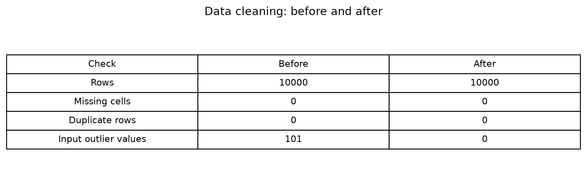
Before-and-after data checks; row counts are records and outliers are input values.
3. Charts and what they show
Each chart is a PNG created by the project script. Charts describe this synthetic dataset; they are not proof of real-battery behavior.
Dataset summary
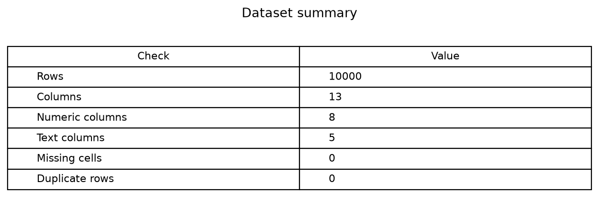
Rows and columns count records and fields; missing cells and duplicates were not found.
SoH histogram
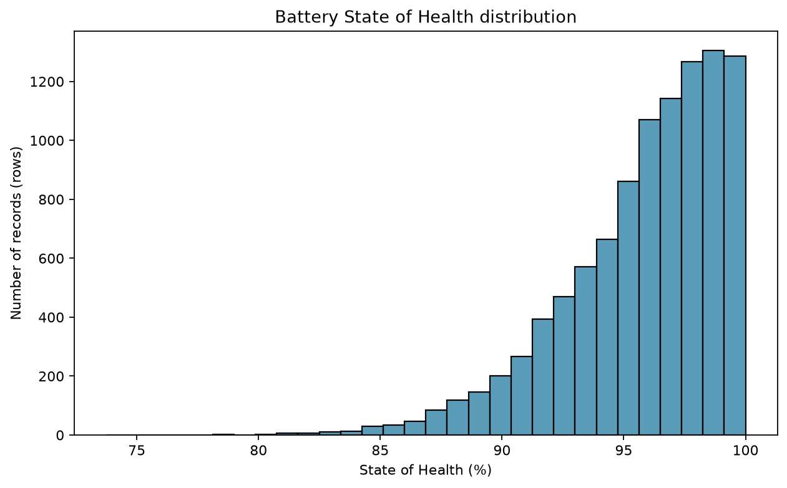
Shows how often SoH values (%) occur in each range.
SoH box plot
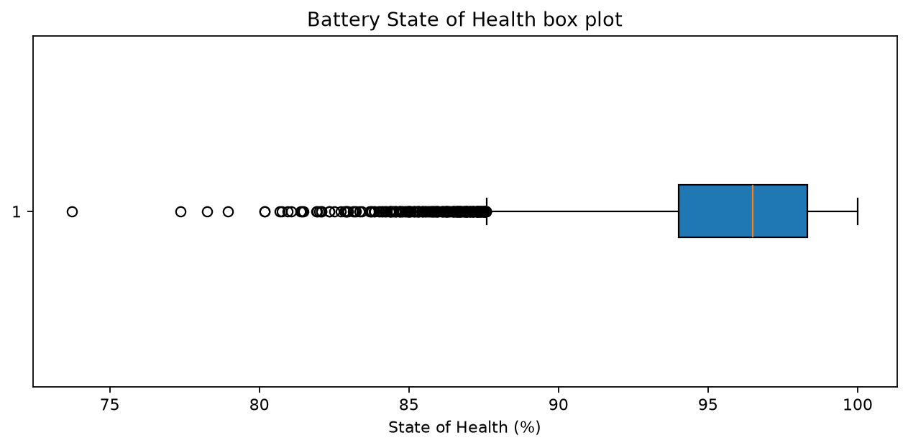
Shows the median, spread, and unusual SoH values (%).
Charging cycles vs SoH

Each point is a record: horizontal position is charging cycles; vertical position is SoH (%).
Correlation heatmap
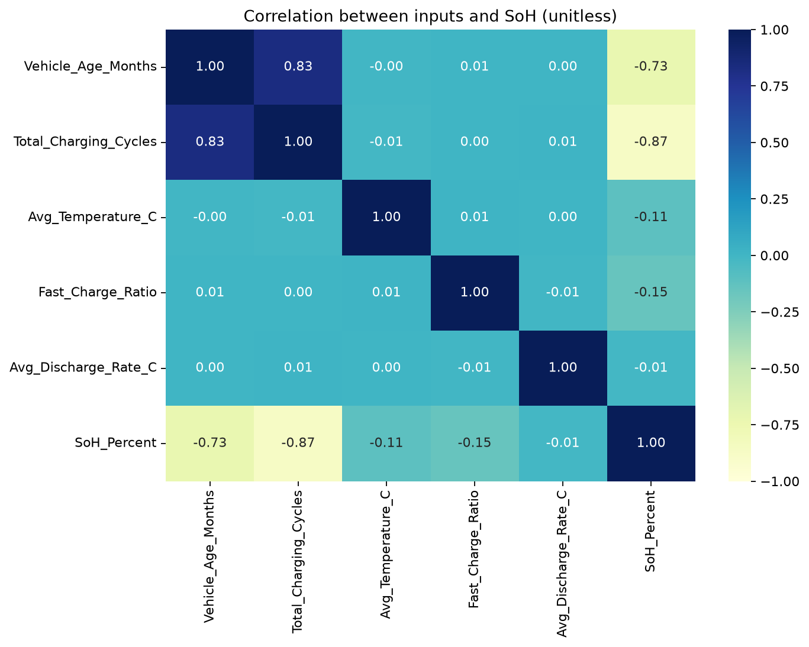
Shows pairwise numeric relationships; correlation is unitless and does not prove cause.
Battery status pie chart
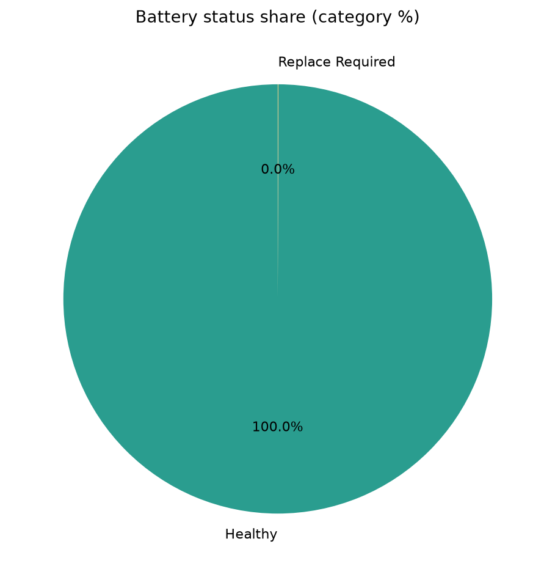
Shows category share as percent of dataset records; categories can be imbalanced.
Battery type bar chart
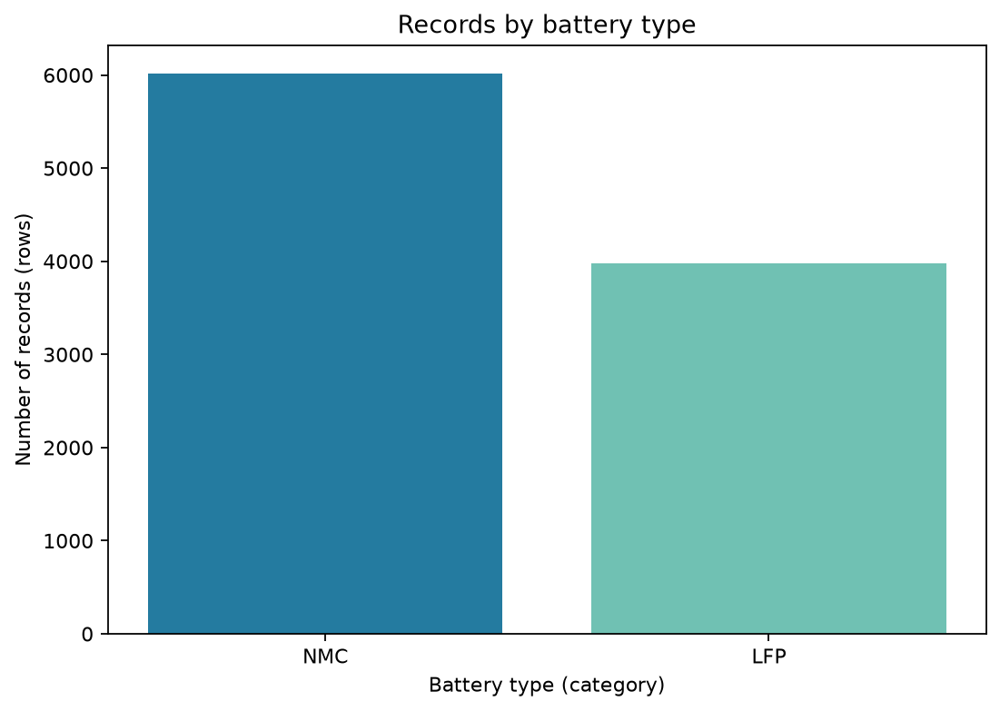
Bar height is the number of dataset records for each battery type.
Feature and split summary

Lists the selected inputs and shows the 8,000-row / 2,000-row train-test split.
Simple regression line
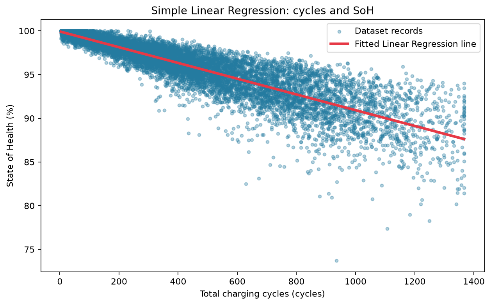
Shows the fitted simple-model line between cycles and SoH (%).
Model evaluation results
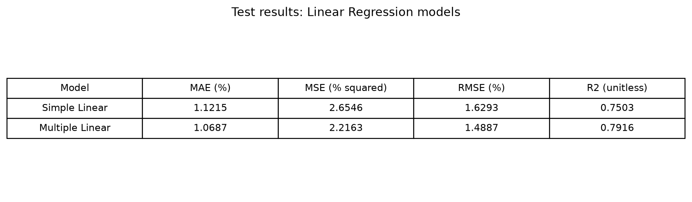
Test-set errors are in percentage points or squared percentage points; R² is unitless.
Held-out example
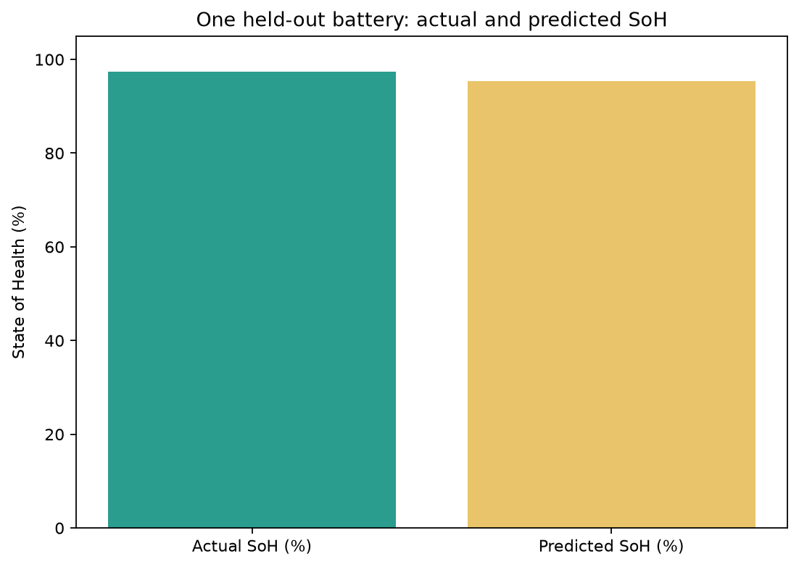
One example compares measured test SoH (%) with the multiple model's prediction (%).
New-input prediction
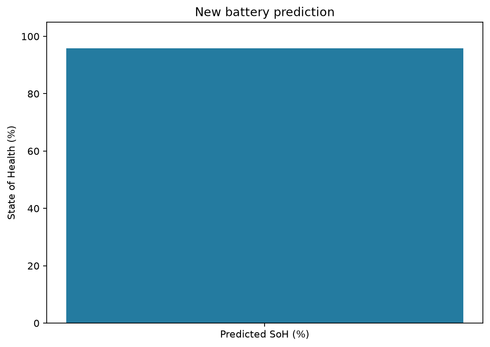
Example terminal prediction for the entered battery measurements; result is SoH (%).
4. Test results
These are measured outputs from the supplied CSV run. MAE and RMSE are in percentage points of SoH; MSE is in squared percentage points; R² has no unit.
| Model | Inputs | MAE (percentage points) | MSE (percentage points²) | RMSE (percentage points) | R² (unitless) |
|---|---|---|---|---|---|
| Simple Linear Regression | Charging cycles only | 1.1215 | 2.6546 | 1.6293 | 0.7503 |
| Multiple Linear Regression | Five selected inputs | 1.0687 | 2.2163 | 1.4887 | 0.7916 |
On this test split, the multiple-input model has lower errors and higher R². This only describes performance on this synthetic dataset and split, not on real EV batteries.
5. Using the program
Run python Python_Code/project.py. The program asks for vehicle age (months), cycles (cycles), temperature (°C), fast-charge ratio (0–1), and discharge rate (C-rate), then prints the estimated SoH (%). Enter values in the same units and realistic ranges used in the CSV.
The terminal is the simple user-input interface. Python loads the data and runs the trained model behind the scenes. The PNG charts and this HTML file are saved reports, not a website or interactive app.
Example display of the predicted SoH (%); a prediction is an estimate, not a battery test.
6. Limitations and next steps
- The dataset is synthetic; ask the teacher to approve it or use an approved measured dataset.
- Results do not establish that the model works on real batteries.
- IQR limits are computed before the split, which can leak test-set information into preparation.
- Battery health may depend on factors not included in the five model inputs.
- Capacity and resistance are excluded because they may be closely linked to the target.
Future improvements: repeat the work with teacher-approved measured data, fit cleaning limits using only training rows, and compare predictions with new measured SoH over time.
Author: Student project — BCA Sem-III.